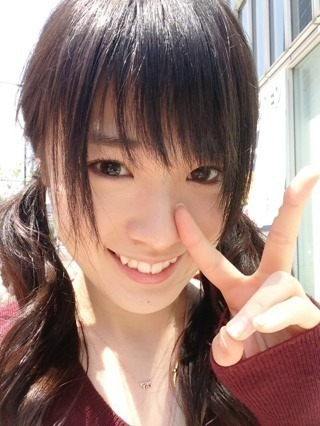

2013/0426Fri（´-`）.｡oO(か ずみん×163
いつも応援ありがとうございます！
プリンシパルに向けて
毎日寝る前もちょっと惜しんで、笑
頑張ってます！！
2幕、去年は不思議の国のアリスを
やりましたね〜
今年はまた、もちろん別の物をやるの
ですが、1つすごーーーく自分に
似ているというか、魅力的な
役があるんですよ。
ちょっと脇役なんですけど(σ´∀｀)σ
その役を練習してから、
稽古がすっごく楽しい( *´艸｀)♪
というかその役しか練習してない！
皆勤賞！
ただ2幕だから...
練習しても、いくら極めても
本番で選ばれなかったら...(T_T)うう
辛いなぁ。
だから今日から違う役も練習します！
今から行ってきやす！
毎日稽古だからネタがないんだよな〜
ただ趣味とかしてる暇あったら
稽古したいから、しょうがないの
ですね...(´-ω-`)
内容薄くてごめんなさい(T_T)
明日からGWとニュースで
言ってたのですが、
私には無縁だーーー！
毎日頑張るぞ！！
どうか応援してください(σ´∀｀)σ
みなさんも毎日を楽しんで♡
それではまた。

2013/04/26 12:36
コメント(593)
かずみんヤッホー(o・・o)/
魅力的な役ってなんやろ？
気になる
ってかあと一週間なんやね
楽しみにしてます
応援してるで
ほなねﾉｼ
魅力的な役ってなんやろ？
気になる
ってかあと一週間なんやね
楽しみにしてます
応援してるで
ほなねﾉｼ
毎日稽古お疲れ様です！！
これからも頑張って*\(^o^)/*
楽しみにしてます♪
これからも頑張って*\(^o^)/*
楽しみにしてます♪
かずみん稽古がんばってね♪
いつも頑張ってる
そんなかずみん大好き!
俺も高校がんばるから
かずみんも頑張ってね!
そんなかずみん大好き!
俺も高校がんばるから
かずみんも頑張ってね!
明日楽しみにしてるね！
まさやん。
かずみーん！
稽古がんば！似てる役とは！！！
めちゃ気になる( ﾟдﾟ)
GWプリンシバル行けないー(´･_･`)
ふぁいと！♪
稽古がんば！似てる役とは！！！
めちゃ気になる( ﾟдﾟ)
GWプリンシバル行けないー(´･_･`)
ふぁいと！♪
かずみんこんにちは♪
好きな役が本番でできたらいいね(^3^)/
でも、他の役も覚えてね(笑)
頑張ってねo(^-^)o
好きな役が本番でできたらいいね(^3^)/
でも、他の役も覚えてね(笑)
頑張ってねo(^-^)o
稽古頑張ってください。
かずみんファイト!(^^)!
演じてるとこ見てみたいな～
でもプリンシパルには行けない(T_T)
愛媛だからね！(笑)
GWも学校が休みなくらいで
何もない…宿題がただ多い(>.<)
でも頑張りましょう！！
それじゃあ、応援してるよ(^_^)V
バイバーイ(^_^)ゞ
演じてるとこ見てみたいな～
でもプリンシパルには行けない(T_T)
愛媛だからね！(笑)
GWも学校が休みなくらいで
何もない…宿題がただ多い(>.<)
でも頑張りましょう！！
それじゃあ、応援してるよ(^_^)V
バイバーイ(^_^)ゞ
稽古大変でしょ？
プリンシパル楽しみにしてるっ＊
じゃあね( ´ ▽ ` )ﾉ♡
✨まい✨
プリンシパル楽しみにしてるっ＊
じゃあね( ´ ▽ ` )ﾉ♡
✨まい✨
稽古頑張ってね♪
かずみんこんにちは
稽古頑張ってね
どんな役を練習しているのか気になる
稽古頑張ってね
どんな役を練習しているのか気になる
かずみんこんにちは♪
かずみんが思う魅力的な役、気になるw
内容が薄くてもブログ更新してくれると嬉しいカナー
稽古や撮影などで毎日多忙だとは思いますが、応援しているので無理しない程度に(p*･ω･)p ｶﾞﾝﾊﾞｯﾃ
かずみんが思う魅力的な役、気になるw
内容が薄くてもブログ更新してくれると嬉しいカナー
稽古や撮影などで毎日多忙だとは思いますが、応援しているので無理しない程度に(p*･ω･)p ｶﾞﾝﾊﾞｯﾃ
♪♪かずみん♪♪
こんにちは=^・^=
プリンシパルでかずみんに似てる役できるといいね♪
稽古ネタで十分(^.^)b
かずみんが生き生きとガジってるのが伝わって楽しいよo(^-^)o
かずみさん♪
稽古ガジ頑張って(p^-^)p
またコメしますね(^^ゞ
またね(*・ｘ・)ノ~~~♪
こんにちは=^・^=
プリンシパルでかずみんに似てる役できるといいね♪
稽古ネタで十分(^.^)b
かずみんが生き生きとガジってるのが伝わって楽しいよo(^-^)o
かずみさん♪
稽古ガジ頑張って(p^-^)p
またコメしますね(^^ゞ
またね(*・ｘ・)ノ~~~♪
こんにちは( ￣▽￣)
こんなにかずみん頑張ってるのに、
プリンシパル見に行けないんだよなぁ(- -;)
かずみんに似てる役っていうのもめっちゃ気になる(笑)
プリンシパルは行けないけど、パシフィコは行くからよろしくね！
じゃあ、短いけどこの辺で(^_^)
いつも応援してるよ（*＾3＾）/～☆
こんなにかずみん頑張ってるのに、
プリンシパル見に行けないんだよなぁ(- -;)
かずみんに似てる役っていうのもめっちゃ気になる(笑)
プリンシパルは行けないけど、パシフィコは行くからよろしくね！
じゃあ、短いけどこの辺で(^_^)
いつも応援してるよ（*＾3＾）/～☆
かずみんこんにちわ！頑張ってね！
更新に感謝
お稽古、ガンバレ～
UTB買ったよ
43Pの上段の表情に
ドキッ！っとしました。
ばいば～い
世界中に響き渡れ
ポジピーーーース
お稽古、ガンバレ～
UTB買ったよ
43Pの上段の表情に
ドキッ！っとしました。
ばいば～い
世界中に響き渡れ
ポジピーーーース
こんにちは。お疲れ様です
毎日の稽古、大変だと思いますが体に気をつけて頑張ってください
プリンシバルでの活躍楽しみにしてます
毎日の稽古、大変だと思いますが体に気をつけて頑張ってください
プリンシバルでの活躍楽しみにしてます
キャプテーン＼(^o^)／
稽古お疲れ様！
プリンシパル行けないけど
友達が行くからその友達からのレポ楽しみにしてるo(｀ω´ )o
また、ブログとかでも報告お願いね！
稽古ネタでもブログ更新してくれてるだけで嬉しいよ！
稽古がんばれ！
以上、つばさでしたー(´･Д･)」
稽古お疲れ様！
プリンシパル行けないけど
友達が行くからその友達からのレポ楽しみにしてるo(｀ω´ )o
また、ブログとかでも報告お願いね！
稽古ネタでもブログ更新してくれてるだけで嬉しいよ！
稽古がんばれ！
以上、つばさでしたー(´･Д･)」
あのね、
かずみさん。。。
ツイン
可愛いすぎて(*´ー｀*)
キュンキュンした
稽古楽しんでねぇ～
いち。
かずみさん。。。
ツイン
可愛いすぎて(*´ー｀*)
キュンキュンした
稽古楽しんでねぇ～
いち。
かずみん頑張っとるんやねー( ^ω^ )
その役気になるわ…
なんだろな！なんだろな！わくわく
ブログのことは気にしなくていいよ☆
近況報告ちょろっとでも嬉しい\(//∇//)\
なす
写メ、めっちゃ良い表情してますね
プリンシパルのお稽古頑張ってください～応援しています
ガク
稽古忙しそうだけど
体には気を付けて頑張ってね
体には気を付けて頑張ってね
かずみんおはよー(*･ω･)ﾉ
いよいよプリンシパル近づいてきたね！
どんな役になるか分からなくて大変だと思うけど、気に入った役やれるといいね(´ｰ｀)
違う役でも本番演じてみたら好きになるかもだし本番は楽しもうね♪
おれは明日から９連休＼(^o^)／
予定乃木坂しかない乃木充する(￣∇￣)
それじゃあバイト行ってきます(｀･ω･´)
いよいよプリンシパル近づいてきたね！
どんな役になるか分からなくて大変だと思うけど、気に入った役やれるといいね(´ｰ｀)
違う役でも本番演じてみたら好きになるかもだし本番は楽しもうね♪
おれは明日から９連休＼(^o^)／
予定乃木坂しかない乃木充する(￣∇￣)
それじゃあバイト行ってきます(｀･ω･´)
かずみん、こんちわ～！
(^O^)/
毎日稽古お疲れちゃんね！
で、かずみんに似てる魅力的な役？どんなんだろ？
見てみたいなぁ。でも、これはメンバー全員に言える事だけど、投票はしっかりと良く観て判断させてもらうよ！
だけど、かずみんのその役が見れるのを楽しみにしてんよ～！
じゃ、またね！
(* ^ー゜)ノ
ポジティブsay！
(^O^)/
毎日稽古お疲れちゃんね！
で、かずみんに似てる魅力的な役？どんなんだろ？
見てみたいなぁ。でも、これはメンバー全員に言える事だけど、投票はしっかりと良く観て判断させてもらうよ！
だけど、かずみんのその役が見れるのを楽しみにしてんよ～！
じゃ、またね！
(* ^ー゜)ノ
ポジティブsay！
かずみーん＼(^o^)／
またコメントするよー★
毎日プリンシパルの稽古
本当にお疲れさまです(´Д` )！！
魅力的な役ってなんだろー？
気になるね( *｀ω´)
プリンシパル観に行くから
当日まで楽しみにしてよーっと笑
オレもGWなんて皆無。
世間様は休みでいいよねー。
かずみんもがんばってるから
オレも頑張らなくちゃ^^
またコメントするねー(^-^)/
ポジティブSAY！
またコメントするよー★
毎日プリンシパルの稽古
本当にお疲れさまです(´Д` )！！
魅力的な役ってなんだろー？
気になるね( *｀ω´)
プリンシパル観に行くから
当日まで楽しみにしてよーっと笑
オレもGWなんて皆無。
世間様は休みでいいよねー。
かずみんもがんばってるから
オレも頑張らなくちゃ^^
またコメントするねー(^-^)/
ポジティブSAY！
がんばれ
身体だけは気をつけて(^^)d
素の自分をだせばきっといい結果出るよ♪
四六時中乃木坂大好きなオッサンより(⌒‐⌒)
素の自分をだせばきっといい結果出るよ♪
四六時中乃木坂大好きなオッサンより(⌒‐⌒)
内容ないことないよ！
かずみんも頑張ってるんだって凄く励まされるヾ(＠⌒ー⌒＠)ノ
楽しみが見つかってよかったね。
本番では是非その役やってほしいな( ´ ▽ ` )
かずみんも頑張ってるんだって凄く励まされるヾ(＠⌒ー⌒＠)ノ
楽しみが見つかってよかったね。
本番では是非その役やってほしいな( ´ ▽ ` )
かずみさん、毎日お疲れ様。
今日で仕事終わりだよー。
10連休です。ほとんど東京だけど、、
名古屋に全然いないー。
プリンシバル初日と4日と最終日行くね。
頑張ってるかずみさんをしっかりみるね。
髪型可愛い。あと、ちょい仕事頑張る！
かずみさんも頑張って。。
今日で仕事終わりだよー。
10連休です。ほとんど東京だけど、、
名古屋に全然いないー。
プリンシバル初日と4日と最終日行くね。
頑張ってるかずみさんをしっかりみるね。
髪型可愛い。あと、ちょい仕事頑張る！
かずみさんも頑張って。。
頑張って！
かずみん こんにちわ！
毎日元気に頑張ってるみたいですね。楽しみにしていますのでくれぐれも無理しないで頑張って下さい。
更新お疲れ様ｵﾂｶﾚｰ(_´Д｀)ﾉ~~
内容無いと思ってても書いてくれるの嬉しい＼(^o^)／
得意なのばっかやってるって(笑)
苦手なのをそう思わせないくらいまで出来てたらそれもありだよね！
あと、どうせ主役やる事になるんだから主役やろう！( ﾟρﾟ )
どんな役でも楽しく演じててくれたら見てる方もきっと楽しいよね＼(^o^)／
頑張れー！！
ではでは
内容無いと思ってても書いてくれるの嬉しい＼(^o^)／
得意なのばっかやってるって(笑)
苦手なのをそう思わせないくらいまで出来てたらそれもありだよね！
あと、どうせ主役やる事になるんだから主役やろう！( ﾟρﾟ )
どんな役でも楽しく演じててくれたら見てる方もきっと楽しいよね＼(^o^)／
頑張れー！！
ではでは
内容はそれほど気にしなくてもいいよ
たくさん更新してくれるので嬉しい
たくさん更新してくれるので嬉しい
プリンシパル頑張ってください。
楽しみにしています^_^
かずみんお疲れ！！
毎日レッスン大変そうだね！
頑張って！！
UTB買ってみたよ( ^ ^ )/□
いつもと違ってとっても良かったです！！
また更新待ってます(*^o^*)
毎日レッスン大変そうだね！
頑張って！！
UTB買ってみたよ( ^ ^ )/□
いつもと違ってとっても良かったです！！
また更新待ってます(*^o^*)
俺も受験生だからGWはないよ！
図書館通いかな？
だから一緒に頑張ろうぜ笑っ
図書館通いかな？
だから一緒に頑張ろうぜ笑っ
あめいじーんぐ←
俺も最近仕事浸けだからネタが無い！(笑)
故にブログを更新しない！w
かずみんにぴったりの役かー
本番の時注意して見とくねヽ(・∀・)ノ
なれるといいね！
俺も明日仕事やねん…
ライブ行けない( ；∀；)
最近ライブ全然見れてないからリアルに病んでます←
でも、頑張ってきてね、楽しんで♪
あれ？最後の写真いつもとちょっと雰囲気違う…？
可愛い♪(/ω＼*)
ツインあんまり好きじゃない俺なんですが←(笑)
んだらー
アデュー
ケツ
かずみん こんばんは
プリンシパルの稽古 お疲れ様です
追い込み入ってるとは思いますが頑張って下さい
駄菓子菓子、写メ 可愛い過ぎです
ほんま 惚れてしまいそうになりました
プリンシパルの稽古 お疲れ様です
追い込み入ってるとは思いますが頑張って下さい
駄菓子菓子、写メ 可愛い過ぎです
ほんま 惚れてしまいそうになりました
かずみん♪
大事なこと書き忘れてた！(@゜▽゜@)
ツイン可愛いすぎる！
それでは(^^ゞ
またね(*・ｘ・)ノ~~~♪
大事なこと書き忘れてた！(@゜▽゜@)
ツイン可愛いすぎる！
それでは(^^ゞ
またね(*・ｘ・)ノ~~~♪
可愛い過ぎる！
ヤッシーです(^-^)v
体に気をつけて頑張って!!
へばっまずな(^-^)/~~
体に気をつけて頑張って!!
へばっまずな(^-^)/~~
かずみん こんにちは(^-^*)/
プリンシパル公演の練習お疲れ様です
(^O^)/
かずみんに合った役、めっちゃ興味あるねぇ♪
その役のかずみんが見たいけど、やっぱり主役でも見たいからね
p(^^)q
ブログは気にしないで良いよ☆
納得いくまで練習頑張ってくださいね＼＾o＾／
世間はゴールデンウィークってやつだね
(T-T)
ほとんど仕事…
電車の運転士では仕方ないよね
f^_^;
唯一のお休みの4日は、もちろんプリンシパル公演を見に東京まで行くぜ！(＾＾)！
楽しみにして仕事頑張るから、かずみんも頑張ってねo(＞＜)o
プリンシパル公演の練習お疲れ様です
(^O^)/
かずみんに合った役、めっちゃ興味あるねぇ♪
その役のかずみんが見たいけど、やっぱり主役でも見たいからね
p(^^)q
ブログは気にしないで良いよ☆
納得いくまで練習頑張ってくださいね＼＾o＾／
世間はゴールデンウィークってやつだね
(T-T)
ほとんど仕事…
電車の運転士では仕方ないよね
f^_^;
唯一のお休みの4日は、もちろんプリンシパル公演を見に東京まで行くぜ！(＾＾)！
楽しみにして仕事頑張るから、かずみんも頑張ってねo(＞＜)o
かずみん皆勤賞すごい
体調崩さないで頑張ってね
体調崩さないで頑張ってね
かずみん稽古お疲れ様です☆
そのかずみんの努力…
初日目に焼き付けるから(*´∀｀*)
大阪も申し込みしたよ…
かずみんの頑張り見守りたいから♪♪
かずみんにはほんま不思議と人を元気にする力あるなって思うよ(*´∀｀*)
辛いときもポジティブSAY!でガジ頑張りましょう！！
UTB買ったよ?昭和かずみんしっとり系で綺麗やった(*´∀｀*)
次、握手する時はしっとりかずみん希望(*´∀｀*)（笑）
では、自分も遅いゴールデンウイークになりますがガジ頑張ります！！
赤チョッパー帽子のまさひろ
そのかずみんの努力…
初日目に焼き付けるから(*´∀｀*)
大阪も申し込みしたよ…
かずみんの頑張り見守りたいから♪♪
かずみんにはほんま不思議と人を元気にする力あるなって思うよ(*´∀｀*)
辛いときもポジティブSAY!でガジ頑張りましょう！！
UTB買ったよ?昭和かずみんしっとり系で綺麗やった(*´∀｀*)
次、握手する時はしっとりかずみん希望(*´∀｀*)（笑）
では、自分も遅いゴールデンウイークになりますがガジ頑張ります！！
赤チョッパー帽子のまさひろ
また、１位になれるよう頑張って！応援してます！
かずみん可愛いな！
プリンシパル楽しみにしてる！
プリンシパル楽しみにしてる！
ヤッホーかずみん。
プリンシパル楽しみ。お稽古頑張って。
プリンシパル楽しみ。お稽古頑張って。
かずみんプリンシパル楽しみにしてます
写真かわいい
写真かわいい


プリンシパル楽しみにしてる(￣▽￣)
辛くなったらポジティブSay(^_^)
＼(^o^)／アメージング‼